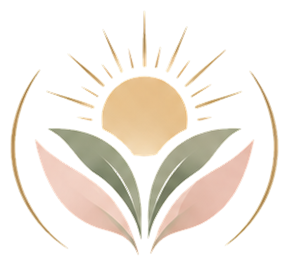
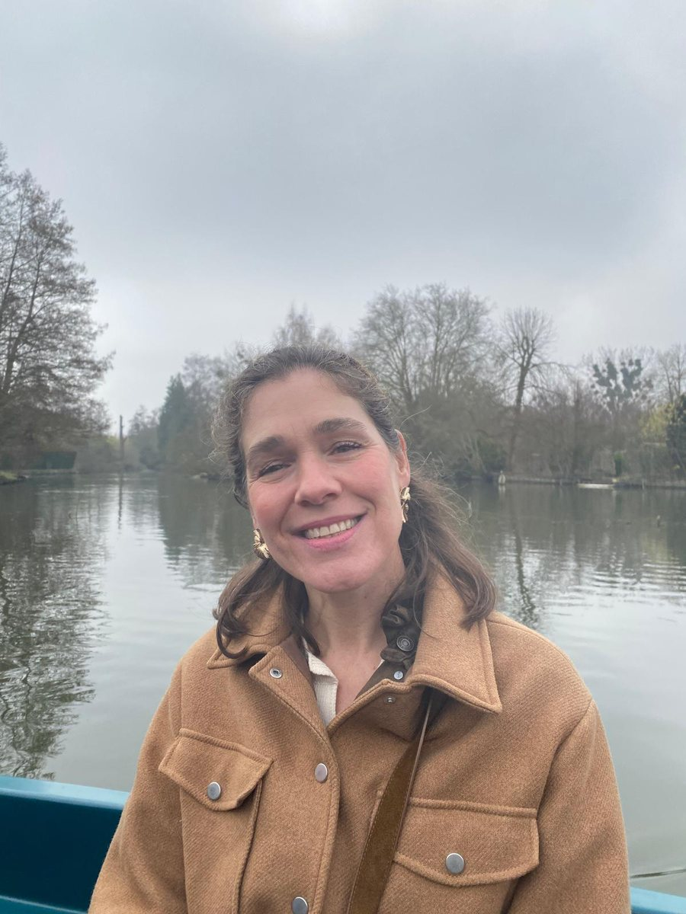

Plus de vous
- + de temps pour vous
- + de respect
- + d’estime de vous
- + de douceur
- Une véritable connexion à vos sens et à votre corps
Pour retrouver énergie, joie, sérénité et vous accomplir
en reliant corps et esprit ...

Pour traverser cette phase de transition sereinement, avec tous les atouts en main…
Mettre toutes les chances de votre côté pour conserver énergie, joie, sérénité et vous accomplir !
Vous êtes capable de tant de choses insoupçonnées…
En prenant en compte le lien puissant entre corps et esprit.
Sororitéauthenticitéconfiancetransmissionavanceréclairerlibertéjouerinventerconstructionémerveillementlibération

École de commerce, des années à l’écoute des autres, trois enfants, puis un long chemin vers moi-même grâce au sport, à l’alimentation, au yoga, à la danse, à l’écriture et à la méditation.
« Je crois profondément à la force des émotions qui nous traversent et au lien puissant qui nous relie entre femmes. »
Réservons un créneau et prenons quelques minutes pour échanger. Je me déplace à domicile à Paris 15e et dans les arrondissements voisins. Hâte de vous accompagner.